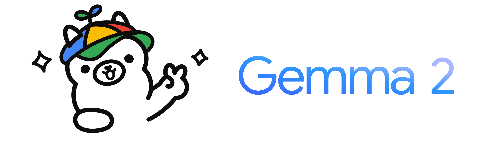
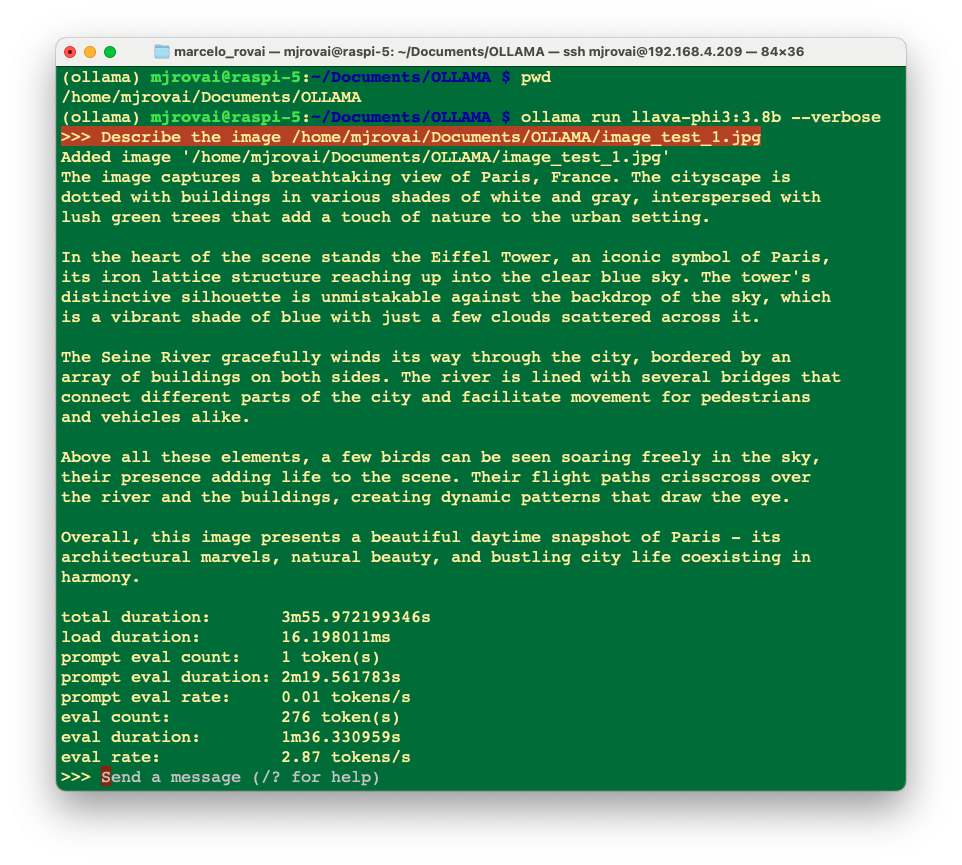
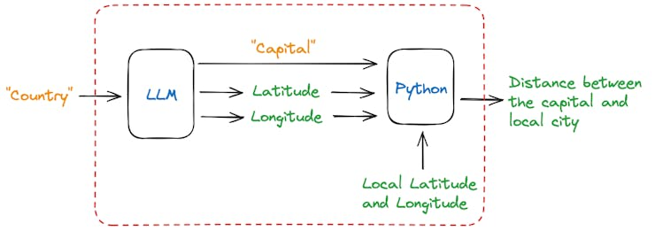
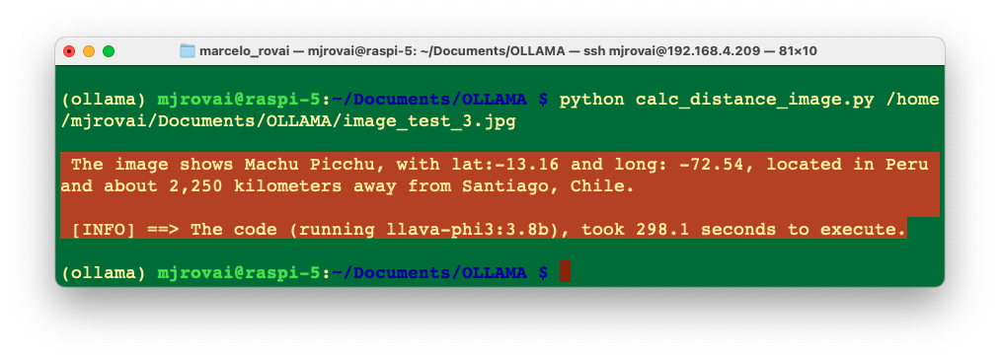
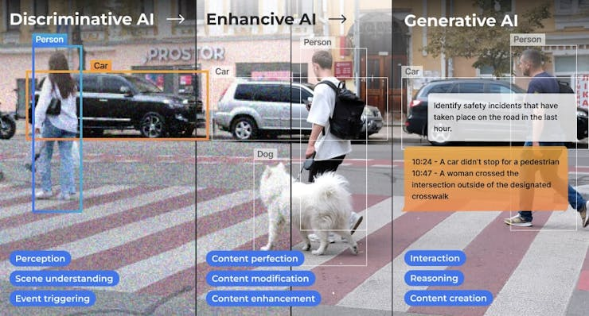

Small Language Models (SLM)

Panoramica
Nell’area in rapida crescita dell’intelligenza artificiale, l’edge computing offre l’opportunità di decentralizzare le capacità tradizionalmente riservate a server potenti e centralizzati. Questo laboratorio esplora l’integrazione pratica di piccole versioni di modelli linguistici tradizionali di grandi dimensioni (LLM) in un Raspberry Pi 5, trasformando questo dispositivo edge in un hub di IA in grado di elaborare dati in tempo reale e in loco.
Man mano che i modelli linguistici di grandi dimensioni crescono in dimensioni e complessità, gli Small Language Model (SLM) offrono un’alternativa interessante per i dispositivi edge, raggiungendo un equilibrio tra prestazioni ed efficienza delle risorse. Eseguendo questi modelli direttamente su Raspberry Pi, possiamo creare applicazioni reattive e rispettose della privacy che funzionano anche in ambienti con connettività Internet limitata o assente.
Questo laboratorio guiderà attraverso la configurazione, l’ottimizzazione e lo sfruttamento degli SLM su Raspberry Pi. Esploreremo l’installazione e l’utilizzo di Ollama. Questo framework open source ci consente di eseguire LLM localmente sulle nostre macchine (i nostri desktop o dispositivi edge come Raspberry Pi o NVidia Jetson). Ollama è progettato per essere efficiente, scalabile e facile da usare, il che lo rende una buona opzione per distribuire modelli di IA come Microsoft Phi, Google Gemma, Meta Llama e LLaVa (Multimodal). Integreremo alcuni di questi modelli in progetti utilizzando l’ecosistema Python, esplorandone il potenziale in scenari del mondo reale (o almeno indicheremo questa direzione).

Setup
Nei laboratori precedenti avremmo potuto usare qualsiasi modello Raspi, ma qui la scelta deve ricadere sul Raspberry Pi 5 (Raspi-5). È una piattaforma robusta che aggiorna sostanzialmente l’ultima versione 4, dotata di Broadcom BCM2712, una CPU Arm Cortex-A76 quad-core a 64 bit da 2,4 GHz con Cryptographic Extension e capacità di caching migliorate. Vanta una GPU VideoCore VII, due uscite HDMI® 4Kp60 con HDR e un decoder HEVC 4Kp60. Le opzioni di memoria includono 4 GB e 8 GB di SDRAM LPDDR4X ad alta velocità, con 8 GB come nostra scelta per eseguire SLM. Presenta inoltre un’archiviazione espandibile tramite uno slot per schede microSD e un’interfaccia PCIe 2.0 per periferiche veloci come gli SSD M.2 (Solid State Drive).
Per applicazioni SSL reali, gli SSD sono un’opzione migliore delle schede SD.
A proposito, come ha spiegato Alasdair Allan, l’inferenza diretta sulla CPU Raspberry Pi 5, senza accelerazione GPU, è ora alla pari con le prestazioni del Coral TPU.
Per maggiori informazioni, consultare l’articolo completo: Benchmarking TensorFlow e TensorFlow Lite su Raspberry Pi 5.
Raspberry Pi Active Cooler
Suggeriamo di installare un Active Cooler, una soluzione di raffreddamento clip-on dedicata per Raspberry Pi 5 (Raspi-5), per questo laboratorio. Combina un dissipatore di calore in alluminio con una ventola di raffreddamento a temperatura controllata per mantenere il Raspi-5 in funzione comodamente sotto carichi pesanti, come l’esecuzione di SLM.

L’Active Cooler ha dei pad termici pre-applicati per il trasferimento del calore ed è montato direttamente sulla scheda Raspberry Pi 5 tramite perni a molla. Il firmware Raspberry Pi lo gestisce attivamente: a 60 °C, la ventola del soffiatore viene accesa; a 67,5 °C, la velocità della ventola verrà aumentata; e infine, a 75 °C, la ventola aumenterà fino alla massima velocità. La ventola del soffiatore rallenterà automaticamente quando la temperatura scenderà al di sotto di questi limiti.

Per evitare il surriscaldamento, tutte le schede Raspberry Pi iniziano a limitare il processore quando la temperatura raggiunge gli 80 °C e a limitarlo ulteriormente quando raggiunge la temperatura massima di 85 °C (maggiori dettagli qui).
Generative AI (GenAI)
Generative AI è un sistema di IA in grado di creare nuovi contenuti originali su vari supporti come testo, immagini, audio e video. Questi sistemi apprendono modelli da dati esistenti e utilizzano tale conoscenza per generare nuovi output che in precedenza non esistevano. Large Language Models (LLM), Small Language Models (SLM) e modelli multimodali possono essere tutti considerati tipi di GenAI quando utilizzati per attività generative.
GenAI fornisce il framework concettuale per la creazione di contenuti basati sull’intelligenza artificiale, con gli LLM che fungono da potenti generatori di testo per uso generale. Gli SLM adattano questa tecnologia all’edge computing, mentre i modelli multimodali estendono le capacità di GenAI a diversi tipi di dati. Insieme, rappresentano uno spettro di tecnologie di intelligenza artificiale generativa, ciascuna con i suoi punti di forza e applicazioni, che guidano collettivamente la creazione e la comprensione di contenuti basati sull’IA.
Large Language Models (LLM)
I “Large Language Model (LLM)” sono sistemi avanzati di intelligenza artificiale che comprendono, elaborano e generano testi simili a quelli umani. Questi modelli sono caratterizzati dalla loro enorme scala in termini di quantità di dati su cui vengono addestrati e numero di parametri che contengono. Gli aspetti critici degli LLM includono:
Dimensioni: Gli LLM contengono in genere miliardi di parametri. Ad esempio, GPT-3 ha 175 miliardi di parametri, mentre alcuni modelli più recenti superano un trilione di parametri.
Dati di Addestramento: Vengono addestrati su grandi quantità di dati di testo, spesso inclusi libri, siti Web e altre fonti diverse, che ammontano a centinaia di gigabyte o persino terabyte di testo.
Architettura: La maggior parte degli LLM utilizza architetture basate su trasformatori, che consentono loro di elaborare e generare testo prestando attenzione a diverse parti dell’input contemporaneamente.
Capacità: Gli LLM possono eseguire un’ampia gamma di attività linguistiche senza una messa a punto specifica, tra cui:
- Generazione di testo
- Traduzione
- Riepilogo
- Risposte a domande
- Generazione di codice
- Ragionamento logico
Apprendimento a Intervalli: Spesso possono comprendere ed eseguire nuove attività con esempi o istruzioni minimi.
Richiede molte Risorse: A causa delle loro dimensioni, gli LLM richiedono in genere risorse di elaborazione significative per funzionare, spesso necessitando di potenti GPU o TPU.
Sviluppo Continuo: Il campo degli LLM è in rapida evoluzione, con nuovi modelli e tecniche che emergono costantemente.
Considerazioni Etiche: L’uso degli LLM solleva importanti questioni su pregiudizi, disinformazione e impatto ambientale della formazione di modelli così grandi.
Applicazioni: Gli LLM sono utilizzati in vari campi, tra cui la creazione di contenuti, il servizio clienti, l’assistenza alla ricerca e lo sviluppo di software.
Limitazioni: Nonostante la loro potenza, gli LLM possono produrre informazioni errate o distorte e non hanno capacità di vera comprensione o ragionamento.
Dobbiamo notare che utilizziamo modelli di grandi dimensioni oltre al testo, chiamandoli modelli multimodali. Questi modelli integrano ed elaborano informazioni da più tipi di input contemporaneamente. Sono progettati per comprendere e generare contenuti in varie forme di dati, come testo, immagini, audio e video.
Certamente. Definiamo modelli “open” [aperti] e “closed” [chiusi] nel contesto di modelli di linguaggio e IA:
Modelli Chiusi e Aperti:
Modelli Chiusi, detti anche modelli proprietari, sono modelli di IA il cui funzionamento interno, codice e dati di addestramento non sono divulgati pubblicamente. Esempi: GPT-4 (di OpenAI), Claude (di Anthropic), Gemini (di Google).
Modelli Aperti, noti anche come modelli open source, sono modelli di intelligenza artificiale il cui codice sottostante, architettura e spesso dati di addestramento sono disponibili e accessibili al pubblico. Esempi: Gemma (di Google), LLaMA (di Meta) e Phi (di Microsoft).
I modelli aperti sono particolarmente rilevanti per l’esecuzione di modelli su dispositivi edge come Raspberry Pi in quanto possono essere più facilmente adattati, ottimizzati e distribuiti in ambienti con risorse limitate. Tuttavia, è fondamentale verificare le loro Licenze. I modelli aperti sono dotati di varie licenze open source che possono influenzare il loro utilizzo in applicazioni commerciali, mentre i modelli chiusi hanno termini di servizio chiari, seppur restrittivi.
Small Language Models (SLM)
Nel contesto dell’edge computing su dispositivi come Raspberry Pi, gli LLM su larga scala sono in genere troppo grandi e dispendiosi in termini di risorse per essere eseguiti direttamente. Questa limitazione ha spinto lo sviluppo di modelli più piccoli ed efficienti, come gli Small Language Models (SLM).
Gli SLM sono versioni compatte degli LLM progettate per essere eseguite in modo efficiente su dispositivi con risorse limitate come smartphone, dispositivi IoT e computer a scheda singola come Raspberry Pi. Questi modelli sono significativamente più piccoli in termini di dimensioni e requisiti di calcolo rispetto alle loro controparti più grandi, pur mantenendo impressionanti capacità di comprensione e generazione del linguaggio.
Le caratteristiche principali degli SLM includono:
Conteggio ridotto dei parametri: In genere vanno da poche centinaia di milioni a qualche miliardo di parametri, rispetto ai miliardi a due cifre nei modelli più grandi.
Meno ingombro di memoria: Richiedono, al massimo, pochi gigabyte di memoria anziché decine o centinaia di gigabyte.
Tempo di inferenza più rapido: Possono generare risposte in millisecondi o secondi su dispositivi edge.
Efficienza energetica: Consumano meno energia, rendendoli adatti per dispositivi alimentati a batteria.
Tutela della privacy: Abilitano l’elaborazione sul dispositivo senza inviare dati ai server cloud.
Funzionalità offline: Funzionano senza una connessione Internet.
Gli SLM raggiungono le loro dimensioni compatte attraverso varie tecniche come la distillazione della conoscenza, la potatura del modello e la quantizzazione. Sebbene non possano eguagliare le ampie capacità dei modelli più grandi, gli SLM eccellono in compiti e domini specifici, il che li rende ideali per applicazioni mirate su dispositivi edge.
In genere prenderemo in considerazione gli SLM, modelli linguistici con meno di 5 miliardi di parametri quantizzati a 4 bit.
Esempi di SLM includono versioni compresse di modelli come Meta Llama, Microsoft PHI e Google Gemma. Questi modelli consentono un’ampia gamma di attività di elaborazione del linguaggio naturale direttamente sui dispositivi edge, dalla classificazione del testo e analisi del sentiment alle risposte alle domande e alla generazione di testo limitato.
Per maggiori informazioni sugli SLM, il documento, LLM Pruning and Distillation in Practice: The Minitron Approach, fornisce un approccio che applica il pruning e la distillazione per ottenere SLM da LLM. E, SMALL LANGUAGE MODELS: SURVEY, MEASUREMENTS, AND INSIGHTS, presenta un’indagine e un’analisi complete di Small Language Models (SLM), che sono modelli linguistici con da 100 milioni a 5 miliardi di parametri progettati per dispositivi con risorse limitate.
Ollama

Ollama è un framework open source che ci consente di eseguire modelli linguistici (LM), grandi o piccoli, localmente sulle nostre macchine. Ecco alcuni punti critici su Ollama:
Esecuzione del Modello Locale: Ollama consente di eseguire LM su personal computer o dispositivi edge come Raspi-5, eliminando la necessità di chiamate API basate su cloud.
Facilità d’Uso: Fornisce una semplice interfaccia a riga di comando per scaricare, eseguire e gestire diversi modelli linguistici.
Varietà di Modelli: Ollama supporta vari LLM, tra cui Phi, Gemma, Llama, Mistral e altri modelli open source.
Personalizzazione: Gli utenti possono creare e condividere modelli personalizzati su misura per esigenze o domini specifici.
Leggero: Progettato per essere efficiente e funzionare su hardware di livello consumer.
Integrazione API: Offre un’API che consente l’integrazione con altre applicazioni e servizi.
Incentrato sulla Privacy: Eseguendo i modelli localmente, affronta i problemi di privacy associati all’invio di dati a server esterni.
Multipiattaforma: Disponibile per sistemi macOS, Windows e Linux (il nostro caso, qui).
Sviluppo Attivo: Aggiornato regolarmente con nuove funzionalità e supporto per i modelli.
Guidato dalla Community: Trae vantaggio dai contributi della community e dalla condivisione dei modelli.
Per saperne di più su cosa sia Ollama e come funziona sotto internamente, si può guardare questo breve video di Matt Williams, uno dei fondatori di Ollama:
Matt ha un corso completamente gratuito su Ollama che consigliamo:
Installazione di Ollama
Impostiamo e attiviamo un ambiente virtuale per lavorare con Ollama:
python3 -m venv ~/ollama
source ~/ollama/bin/activateEd eseguiamo il comando per installare Ollama:
curl -fsSL https://ollama.com/install.sh | shDi conseguenza, un’API verrà eseguita in background su 127.0.0.1:11434. D’ora in poi, possiamo eseguire Ollama tramite il terminale. Per iniziare, verifichiamo la versione di Ollama, che ci dirà anche se è installata correttamente:
ollama -v
Nella pagina della Libreria Ollama, possiamo trovare i modelli supportati da Ollama. Ad esempio, filtrando per Most popular, possiamo vedere Meta Llama, Google Gemma, Microsoft Phi, LLaVa, ecc.
Meta Llama 3.2 1B/3B

Installiamo ed eseguiamo il nostro primo piccolo modello linguistico, Llama 3.2 1B (e 3B). La serie Meta Llama 3.2 comprende un set di modelli linguistici generativi multilingue disponibili in dimensioni di parametri pari a 1 miliardo e 3 miliardi. Questi modelli sono progettati per elaborare input di testo e generare output di testo. Le varianti sintonizzate sulle istruzioni all’interno di questa raccolta sono specificamente ottimizzate per applicazioni conversazionali multilingue, tra cui attività che comportano il recupero e la sintesi delle informazioni con un approccio agentico. Rispetto a molti modelli di chat open source e proprietari esistenti, i modelli sintonizzati sulle istruzioni Llama 3.2 dimostrano prestazioni superiori su benchmark di settore ampiamente utilizzati.
I modelli 1B e 3B sono stati potati da Llama 8B, quindi i logit dai modelli 8B e 70B sono stati utilizzati come target a livello di token (distillazione a livello di token). La distillazione della conoscenza è stata utilizzata per recuperare le prestazioni (sono stati addestrati con 9 trilioni di token). Il modello 1B ha 1,24B, quantizzati a intero (Q8_0), e i parametri 3B, 3,12B, con una quantizzazione Q4_0, che termina con una dimensione di 1,3 GB e 2 GB, rispettivamente. La sua finestra di contesto è di 131.072 token.

Installare ed eseguire il Model
ollama run llama3.2:1bEseguendo il modello col comando precedente, dovremmo avere il prompt di Ollama disponibile per inserire una domanda e iniziare a chattare con il modello LLM; ad esempio,
>>> What is the capital of France?
Quasi immediatamente, otteniamo la risposta corretta:
The capital of France is Paris.
Utilizzando l’opzione --verbose quando si richiama il modello, verranno generate diverse statistiche sulle sue prestazioni (Il modello eseguirà il polling solo la prima volta che eseguiamo il comando).

Ogni metrica fornisce informazioni su come il modello elabora gli input e genera gli output. Ecco una ripartizione del significato di ogni metrica:
- Total Duration (2.620170326s): Questo è il tempo completo impiegato dall’inizio del comando al completamento della risposta. Comprende il caricamento del modello, l’elaborazione del prompt di input e la generazione della risposta.
- Load Duration (39.947908ms): Questa durata indica il tempo necessario per caricare il modello o i componenti necessari nella memoria. Se questo valore è minimo, può suggerire che il modello è stato precaricato o che è stata richiesta solo una configurazione minima.
- Prompt Eval Count (32 tokens): Il numero di token nel prompt di input. In NLP, i token sono in genere parole o sotto-parole, quindi questo conteggio include tutti i token che il modello ha valutato per comprendere e rispondere alla query.
- Prompt Eval Duration (1.644773s): Misura il tempo impiegato dal modello per valutare o elaborare il prompt di input. Rappresenta la maggior parte della durata totale, il che implica che comprendere la query e preparare una risposta è la parte più dispendiosa in termini di tempo del processo.
- Prompt Eval Rate (19.46 tokens/s): Questa frequenza indica la rapidità con cui il modello elabora i token dal prompt di input. Riflette la velocità del modello in termini di comprensione del linguaggio naturale.
- Eval Count (8 token(s)): Questo è il numero di token nella risposta del modello, che in questo caso era “The capital of France is Paris.”
- Eval Duration (889.941ms): Questo è il tempo impiegato per generare l’output in base all’input valutato. È molto più breve della valutazione del prompt, il che suggerisce che generare la risposta è meno complesso o computazionalmente intensivo rispetto alla comprensione del prompt.
- Eval Rate (8.99 tokens/s): Simile alla frequenza di valutazione del prompt, indica la velocità con cui il modello genera token di output. È una metrica fondamentale per comprendere l’efficienza del modello nella generazione di output.
Questa ripartizione dettagliata può aiutare a comprendere le richieste computazionali e le caratteristiche delle prestazioni dell’esecuzione di SLM come Llama su dispositivi edge come Raspberry Pi 5. Mostra che mentre la valutazione del prompt richiede più tempo, la generazione effettiva delle risposte è relativamente più rapida. Questa analisi è fondamentale per ottimizzare le prestazioni e diagnosticare potenziali colli di bottiglia nelle applicazioni in tempo reale.
Caricando ed eseguendo il modello 3B, possiamo vedere la differenza nelle prestazioni per lo stesso prompt;

Il tasso di valutazione è inferiore, 5,3 token/s rispetto ai 9 token/s del modello più piccolo.
Quando si chiede
>>> What is the distance between Paris and Santiago, Chile?
Il modello 1B ha risposto 9,841 kilometers (6,093 miles), il che è impreciso, e il modello 3B ha risposto 7,300 miles (11,700 km), il che è vicino alla distanza corretta (11,642 km).
Chiediamo le coordinate di Parigi:
>>> what is the latitude and longitude of Paris?
The latitude and longitude of Paris are 48.8567° N (48°55'
42" N) and 2.3510° E (2°22' 8" E), respectively.Sia i modelli 1B che 3B hanno dato risposte corrette.
Google Gemma 2 2B
Installiamo Gemma 2, un modello efficiente e ad alte prestazioni disponibile in tre dimensioni: 2B, 9B e 27B. Installeremo Gemma 2 2B, un modello leggero addestrato con 2 trilioni di token che produce risultati sproporzionati imparando da modelli più grandi tramite distillazione. Il modello ha 2,6 miliardi di parametri e una quantizzazione Q4_0, che termina con una dimensione di 1,6 GB. La sua finestra di contesto è di 8.192 token.

Installare ed eseguire il Model
ollama run gemma2:2b --verboseEseguendo il modello col comando precedente, dovremmo avere il prompt di Ollama disponibile per inserire una domanda e iniziare a chattare con il modello LLM; ad esempio,
>>> What is the capital of France?
Quasi immediatamente, otteniamo la risposta corretta:
The capital of France is **Paris**. üóº
E le statistiche.

Possiamo vedere che Gemma 2:2B ha più o meno le stesse prestazioni di Lama 3.2:3B, ma con meno parametri.
Altri esempi:
>>> What is the distance between Paris and Santiago, Chile?
The distance between Paris, France and Santiago, Chile is
approximately **7,000 miles (11,267 kilometers)**.
Keep in mind that this is a straight-line distance, and actual
travel distance can vary depending on the chosen routes and any
stops along the way. ✈️`Inoltre, una buona risposta ma meno precisa di Llama3.2:3B.
>>> what is the latitude and longitude of Paris?
You got it! Here are the latitudes and longitudes of Paris,
France:
* **Latitude:** 48.8566° N (north)
* **Longitude:** 2.3522° E (east)
Let me know if you'd like to explore more about Paris or its
location! üóºüá´üá∑Una risposta buona e precisa (un po‚Äô più prolissa delle risposte del lama).
Microsoft Phi3.5 3.8B
Prendiamo un modello più grande (ma comunque “tiny”), il PHI3.5, un modello aperto all’avanguardia leggero da 3,8B di Microsoft. Il modello appartiene alla famiglia di modelli Phi-3 e supporta la lunghezza del contesto token 128K e le lingue: arabo, cinese, ceco, danese, olandese, inglese, finlandese, francese, tedesco, ebraico, ungherese, italiano, giapponese, coreano, norvegese, polacco, portoghese, russo, spagnolo, svedese, tailandese, turco e ucraino.
La dimensione del modello, in termini di byte, dipenderà dal formato di quantizzazione specifico utilizzato. La dimensione può variare dalla quantizzazione a 2 bit (q2_k) di 1,4 GB (prestazioni più elevate/qualità inferiore) alla quantizzazione a 16 bit (fp-16) di 7,6 GB (prestazioni più basse/qualità più elevata).
Eseguiamo la quantizzazione a 4 bit (Q4_0), che richiederà 2,2 GB di RAM, con un compromesso intermedio per quanto riguarda la qualità dell’output e le prestazioni.
ollama run phi3.5:3.8b --verboseSi può usare
runopullper scaricare il modello. Ciò che accade è che Ollama tiene nota dei modelli estratti e, una volta che PHI3 non esiste, prima di eseguirlo, Ollama lo estrae.
Immettiamo lo stesso prompt usato prima:
>>> What is the capital of France?
The capital of France is Paris. It' extradites significant
historical, cultural, and political importance to the country as
well as being a major European city known for its art, fashion,
gastronomy, and culture. Its influence extends beyond national
borders, with millions of tourists visiting each year from around
the globe. The Seine River flows through Paris before it reaches
the broader English Channel at Le Havre. Moreover, France is one
of Europe's leading economies with its capital playing a key role
...La risposta è stata molto “verbosa”, specifichiamo un prompt migliore:

In questo caso, la risposta è stata comunque più lunga di quanto ci aspettassimo, con una velocità di valutazione di 2,25 token/s, più del doppio di quella di Gemma e Llama.
Scegliere il prompt più appropriato è una delle competenze più importanti da utilizzare con gli LLM, indipendentemente dalle dimensioni.
Quando abbiamo posto le stesse domande su distanza e latitudine/longitudine, non abbiamo ottenuto una buona risposta per una distanza di 13,507 kilometers (8,429 miles), ma andava bene per le coordinate. Di nuovo, avrebbe potuto essere meno verbosa (più di 200 token per ogni risposta).
Possiamo usare qualsiasi modello come assistente poich√© la loro velocit√† √® relativamente decente, ma al 24 settembre (2023), Llama2:3B √® una scelta migliore. Si dovrebbero provare altri modelli, a seconda delle esigenze. ü§ó Open LLM Leaderboard pu√≤ dare un‚Äôidea sui migliori modelli in termini di dimensioni, benchmark, licenza, ecc.
Il miglior modello da usare è quello adatto alle specifiche necessità. Inoltre, si tenga presente che questo campo si evolve con nuovi modelli ogni giorno,
Modelli Multimodali
I modelli multimodali sono sistemi di intelligenza artificiale (IA) in grado di elaborare e comprendere informazioni provenienti da più fonti, come immagini, testo, audio e video. Nel nostro contesto, gli LLM multimodali possono elaborare vari input, tra cui testo, immagini e audio, come prompt e convertire tali prompt in vari output, non solo il tipo di sorgente.
Qui lavoreremo con LLaVA-Phi-3, un modello LLaVA ottimizzato da Phi 3 Mini 4k. Ha solidi benchmark di prestazioni che sono alla pari con il modello originale LLaVA (Large Language and Vision Assistant).
LLaVA-Phi-3 è un modello multimodale di grandi dimensioni addestrato end-to-end progettato per comprendere e generare contenuti in base a input visivi (immagini) e istruzioni testuali. Combina le capacità di un codificatore visivo e di un modello linguistico per elaborare e rispondere a input multimodali.
Installiamo il modello:
ollama run llava-phi3:3.8b --verboseCominciamo con un input di testo:
>>> You are a helpful AI assistant. What is the capital of France?
As an AI language model, I can tell you that the capital of France
is Paris. It's not only the largest city in the country but also
serves as its political and administrative center. Paris is known
for its iconic landmarks such as the Eiffel Tower, Notre-Dame
Cathedral, and the Louvre Museum. The city has a rich history,
beautiful architecture, and is widely considered to be one of the
most romantic cities in the world.La risposta ha richiesto circa 30 secondi, con una velocità di valutazione di 3,93 token/s! Niente male!
Ma vediamo di immettere un’immagine come input. Per questo, creiamo una directory per lavorare:
cd Documents/
mkdir OLLAMA
cd OLLAMAScarichiamo un’immagine 640x320 da Internet, per esempio (Wikipedia: Paris, France):
{kind=link}
Utilizzando FileZilla, ad esempio, carichiamo l’immagine nella cartella OLLAMA sul Raspi-5 e chiamiamola image_test_1.jpg. Dovremmo avere l’intero path dell’immagine (possiamo usare pwd per ottenerlo).
/home/mjrovai/Documents/OLLAMA/image_test_1.jpg
Se si usa un desktop, si può copiare il path dell’immagine cliccando sull’immagine con il tasto destro del mouse.

Immettiamo questo prompt:
>>> Describe the image /home/mjrovai/Documents/OLLAMA/image_test_1.jpgIl risultato è stato ottimo, ma la latenza complessiva è stata significativa: quasi 4 minuti per eseguire l’inferenza.

Ispezione delle risorse locali
Utilizzando htop, possiamo monitorare le risorse in esecuzione sul nostro dispositivo.
htopDurante il periodo in cui il modello è in esecuzione, possiamo ispezionare le risorse:

Tutte e quattro le CPU funzionano a quasi il 100% della loro capacità e la memoria utilizzata con il modello caricato è di 3.24GB. Uscendo da Ollama, la memoria scende a circa 377 MB (senza desktop).
È anche essenziale monitorare la temperatura. Quando si esegue Raspberry con un desktop, è possibile visualizzare la temperatura sulla barra delle applicazioni:
Se si è “headless”, la temperatura può essere monitorata col comando:
vcgencmd measure_tempSe non si fa nulla, la temperatura è di circa 50°C per le CPU in esecuzione all’1%. Durante l’inferenza, con le CPU al 100%, la temperatura può salire fino a quasi 70°C. Questo è OK e significa che il dissipatore attivo funziona, mantenendo la temperatura al di sotto di 80°C / 85°C (il suo limite).
Libreria Python Ollama
Finora, abbiamo esplorato la capacità di chat degli SLM utilizzando la riga di comando su un terminale. Tuttavia, vogliamo integrare quei modelli nei nostri progetti, quindi Python sembra essere la strada giusta. La buona notizia è che Ollama ha una libreria del genere.
La libreria Python Ollama semplifica l’interazione con modelli LLM avanzati, consentendo risposte e capacità più sofisticate, oltre a fornire il modo più semplice per integrare progetti Python 3.8+ con Ollama.
Per una migliore comprensione di come creare app usando Ollama con Python, possiamo seguire i video di Matt Williams, come quello qui sotto:
Installazione:
Nel terminale, eseguire il comando:
pip install ollamaAvremo bisogno di un editor di testo o di un IDE per creare uno script Python. Se si esegue Raspberry OS su un desktop, diverse opzioni, come Thonny e Geany, sono già state installate di default (accessibili tramite [Menu][Programming]). Si possono scaricare altri IDE, come Visual Studio Code, da [Menu][Recommended Software]. Quando si apre la finestra, si va su [Programming], e si seleziona l’opzione che si preferisce e si preme [Apply].
Se si preferisce usare Jupyter Notebook per lo sviluppo:
pip install jupyter
jupyter notebook --generate-configPer eseguire Jupyter Notebook, si lancia il comando (cambiare l’indirizzo IP per il proprio):
jupyter notebook --ip=192.168.4.209 --no-browserSul terminale, si può vedere l’indirizzo URL locale per aprire il notebook:

Possiamo accedervi da un altro computer inserendo l’indirizzo IP del Raspberry Pi e il token fornito in un browser web (dovremmo copiarlo dal terminale).
Nella nostra directory di lavoro nel Raspi, creeremo un nuovo notebook Python 3.
Entriamo con uno script molto semplice per verificare i modelli installati:
import ollama
ollama.list()Tutti i modelli verranno stampati come un dizionario, ad esempio:
{'name': 'gemma2:2b',
'model': 'gemma2:2b',
'modified_at': '2024-09-24T19:30:40.053898094+01:00',
'size': 1629518495,
'digest': '8ccf136fdd5298f3ffe2d69862750ea7fb56555fa4d5b18c04e3fa4d82ee09d7',
'details': {'parent_model': '',
'format': 'gguf',
'family': 'gemma2',
'families': ['gemma2'],
'parameter_size': '2.6B',
'quantization_level': 'Q4_0'}}]}Ripetiamo una delle domande che abbiamo fatto prima, ma ora usando ollama.generate() dalla libreria Python Ollama. Questa API genererà una risposta per il prompt specificato con il modello fornito. Questo è un endpoint di streaming, quindi ci saranno una serie di risposte. L’oggetto di risposta finale includerà statistiche e dati aggiuntivi dalla richiesta.
MODEL = 'gemma2:2b'
PROMPT = 'What is the capital of France?'
res = ollama.generate(model=MODEL, prompt=PROMPT)
print (res)Nel caso in cui si stia eseguendo il codice come script Python, lo si deve salvare, ad esempio, test_ollama.py. Si può usare l’IDE per eseguirlo o farlo direttamente sul terminale. Da ricordare, inoltre, che si deve sempre chiamare il modello e definirlo quando si esegue uno script stand-alone.
python test_ollama.pyDi conseguenza, avremo la risposta del modello in un formato JSON:
{'model': 'gemma2:2b', 'created_at': '2024-09-25T14:43:31.869633807Z',
'response': 'The capital of France is **Paris**. üá´üá∑ \n', 'done': True,
'done_reason': 'stop', 'context': [106, 1645, 108, 1841, 603, 573, 6037, 576,
6081, 235336, 107, 108, 106, 2516, 108, 651, 6037, 576, 6081, 603, 5231, 29437,
168428, 235248, 244304, 241035, 235248, 108], 'total_duration': 24259469458,
'load_duration': 19830013859, 'prompt_eval_count': 16, 'prompt_eval_duration':
1908757000, 'eval_count': 14, 'eval_duration': 2475410000}Come possiamo vedere, vengono generate diverse informazioni, come:
- response: il testo di output principale generato dal modello in risposta al nostro prompt.
The capital of France is **Paris**. üá´üá∑
- context: gli ID token che rappresentano l’input e il contesto utilizzati dal modello. I token sono rappresentazioni numeriche del testo utilizzate per l’elaborazione dal modello linguistico.
[106, 1645, 108, 1841, 603, 573, 6037, 576, 6081, 235336, 107, 108,106, 2516, 108, 651, 6037, 576, 6081, 603, 5231, 29437, 168428,235248, 244304, 241035, 235248, 108]
Le Metriche delle Prestazioni:
- total_duration: Tempo totale impiegato per l’operazione in nanosecondi. In questo caso, circa 24,26 secondi.
- load_duration: Tempo impiegato per caricare il modello o i componenti in nanosecondi. Circa 19,83 secondi.
- prompt_eval_duration: Tempo impiegato per valutare il prompt in nanosecondi. Circa 16 nanosecondi.
- eval_count: Numero di token valutati durante la generazione. Qui, 14 token.
- eval_duration: Tempo impiegato dal modello per generare la risposta in nanosecondi. Circa 2,5 secondi.
Ma ciò che vogliamo è la semplice ‘response’ e, forse per l’analisi, la durata totale dell’inferenza, quindi modifichiamo il codice per estrarlo dal dizionario:
print(f"\n{res['response']}")
print(f"\n [INFO] Total Duration: {(res['total_duration']/1e9):.2f} seconds")Ora, abbiamo:
The capital of France is **Paris**. üá´üá∑
[INFO] Total Duration: 24.26 secondsUtilizzo di Ollama.chat()
Un altro modo per ottenere la nostra risposta è utilizzare ollama.chat(), che genera il messaggio successivo in una chat con un modello fornito. Questo è un endpoint di streaming, quindi si verificheranno una serie di risposte. Lo streaming può essere disabilitato utilizzando "stream": false. L’oggetto di risposta finale includerà anche statistiche e dati aggiuntivi dalla richiesta.
PROMPT_1 = 'What is the capital of France?'
response = ollama.chat(model=MODEL, messages=[
{'role': 'user','content': PROMPT_1,},])
resp_1 = response['message']['content']
print(f"\n{resp_1}")
print(f"\n [INFO] Total Duration: {(res['total_duration']/1e9):.2f} seconds")La risposta è la stessa di prima.
Una considerazione importante è che usando ollama.generate(), la risposta è “chiara” dalla “memoria” del modello dopo la fine dell’inferenza (usata solo una volta), ma se vogliamo mantenere una conversazione, dobbiamo usare ollama.chat(). Vediamolo in azione:
PROMPT_1 = 'What is the capital of France?'
response = ollama.chat(model=MODEL, messages=[
{'role': 'user','content': PROMPT_1,},])
resp_1 = response['message']['content']
print(f"\n{resp_1}")
print(f"\n [INFO] Total Duration: {(response['total_duration']/1e9):.2f} seconds")
PROMPT_2 = 'and of Italy?'
response = ollama.chat(model=MODEL, messages=[
{'role': 'user','content': PROMPT_1,},
{'role': 'assistant','content': resp_1,},
{'role': 'user','content': PROMPT_2,},])
resp_2 = response['message']['content']
print(f"\n{resp_2}")
print(f"\n [INFO] Total Duration: {(response['total_duration']/1e9):.2f} seconds")Nel codice sopra, stiamo eseguendo due query e il secondo prompt considera il risultato del primo.
Ecco come ha risposto il modello:
The capital of France is **Paris**. üá´üá∑
[INFO] Total Duration: 2.82 seconds
The capital of Italy is **Rome**. üáÆüáπ
[INFO] Total Duration: 4.46 secondsOttenere una descrizione dell’immagine:
Allo stesso modo in cui abbiamo utilizzato il modello LlaVa-PHI-3 con la riga di comando per analizzare un’immagine, lo stesso può essere fatto qui con Python. Usiamo la stessa immagine di Parigi, ma ora con ollama.generate():
MODEL = 'llava-phi3:3.8b'
PROMPT = "Describe this picture"
with open('image_test_1.jpg', 'rb') as image_file:
img = image_file.read()
response = ollama.generate(
model=MODEL,
prompt=PROMPT,
images= [img]
)
print(f"\n{response['response']}")
print(f"\n [INFO] Total Duration: {(res['total_duration']/1e9):.2f} seconds")Ecco il risultato:
This image captures the iconic cityscape of Paris, France. The vantage point
is high, providing a panoramic view of the Seine River that meanders through
the heart of the city. Several bridges arch gracefully over the river,
connecting different parts of the city. The Eiffel Tower, an iron lattice
structure with a pointed top and two antennas on its summit, stands tall in the
background, piercing the sky. It is painted in a light gray color, contrasting
against the blue sky speckled with white clouds.
The buildings that line the river are predominantly white or beige, their uniform
color palette broken occasionally by red roofs peeking through. The Seine River
itself appears calm and wide, reflecting the city's architectural beauty in its
surface. On either side of the river, trees add a touch of green to the urban
landscape.
The image is taken from an elevated perspective, looking down on the city. This
viewpoint allows for a comprehensive view of Paris's beautiful architecture and
layout. The relative positions of the buildings, bridges, and other structures
create a harmonious composition that showcases the city's charm.
In summary, this image presents a serene day in Paris, with its architectural
marvels - from the Eiffel Tower to the river-side buildings - all bathed in soft
colors under a clear sky.
[INFO] Total Duration: 256.45 secondsIl modello ha impiegato circa 4 minuti (256,45 s) per restituire una descrizione dettagliata dell’immagine.
Nel notebook 10-Ollama_Python_Library, è possibile trovare gli esperimenti con la libreria Python Ollama.
Chiamata di Funzione
Finora, possiamo osservare che utilizzando la risposta del modello in una variabile, possiamo incorporarla efficacemente in progetti reali. Tuttavia, sorge un problema importante quando il modello fornisce risposte diverse allo stesso input. Ad esempio, supponiamo di aver bisogno solo del nome della capitale di un paese e delle sue coordinate come risposta del modello negli esempi precedenti, senza ulteriori informazioni, anche quando si utilizzano modelli dettagliati come Microsoft Phi. Per garantire risposte coerenti, possiamo utilizzare la “chiamata di funzione Ollama”, che è completamente compatibile con l’API OpenAI.
Ma cos’è esattamente la “chiamata di funzione”?
Nell’intelligenza artificiale moderna, la chiamata di funzione con Large Language Models (LLM) consente a questi modelli di eseguire azioni che vanno oltre la generazione di testo. Integrandosi con funzioni o API esterne, gli LLM possono accedere a dati in tempo reale, automatizzare attività e interagire con vari sistemi.
Ad esempio, invece di rispondere semplicemente a una query sul meteo, un LLM può chiamare un’API meteo per recuperare le condizioni attuali e fornire informazioni accurate e aggiornate. Questa capacità migliora la pertinenza e l’accuratezza delle risposte del modello e lo rende uno strumento potente per guidare flussi di lavoro e automatizzare i processi, trasformandolo in un partecipante attivo nelle applicazioni del mondo reale.
Per maggiori dettagli sulla “Function Calling” chiamata di funzione, c’è questo video realizzato da Marvin Prison:
Creiamo un progetto.
Vogliamo creare un’app in cui l’utente inserisce il nome di un Paese e ottiene, come output, la distanza in km dalla capitale di tale Paese e la posizione dell’app (per semplicità, useremo Santiago del Cile come posizione dell’app).

Una volta che l’utente inserisce il nome di un paese, il modello restituirà il nome della sua capitale (come stringa) e la latitudine e la longitudine di tale città (in float). Utilizzando queste coordinate, possiamo usare una semplice libreria Python (haversine) per calcolare la distanza tra quei 2 punti.
L’idea di questo progetto è dimostrare una combinazione di interazione del modello linguistico, gestione dei dati strutturati con Pydantic e calcoli geospaziali utilizzando la formula di Haversine (informatica tradizionale).
Per prima cosa, installiamo alcune librerie. Oltre a Haversine, la principale è la libreria Python OpenAI, che fornisce un comodo accesso all’API REST OpenAI da qualsiasi applicazione Python 3.7+. L’altra è Pydantic (e instructor), una libreria robusta di convalida dei dati e gestione delle impostazioni progettata da Python per migliorare la robustezza e l’affidabilità della nostra base di codice. In breve, Pydantic ci aiuterà a garantire che la risposta del nostro modello sia sempre coerente.
pip install haversine
pip install openai
pip install pydantic
pip install instructorOra, dovremmo creare uno script Python progettato per interagire con il nostro modello (LLM) per determinare le coordinate della capitale di un paese e calcolare la distanza da Santiago del Cile a quella capitale.
Diamo un’occhiata al codice:
1. Importazione delle Librerie
import sys
from haversine import haversine
from openai import OpenAI
from pydantic import BaseModel, Field
import instructor- sys: Fornisce accesso a parametri e funzioni specifici del sistema. Viene utilizzato per ottenere argomenti dalla riga di comando.
- haversine: Una funzione della libreria haversine che calcola la distanza tra due punti geografici utilizzando la formula Haversine.
- openAI: Un modulo per interagire con l’API OpenAI (anche se viene utilizzato insieme a una configurazione locale, Ollama). Qui tutto è offline.
- pydantic: Fornisce la convalida dei dati e la gestione delle impostazioni utilizzando annotazioni di tipo Python. Viene utilizzato per definire la struttura dei dati di risposta previsti.
- instructor: Un modulo viene utilizzato per applicare patch al client OpenAI per funzionare in una modalità specifica (probabilmente correlata alla gestione dei dati strutturati).
2. Definizione di Input e Modello
country = sys.argv[1] # Get the country from command-line arguments
MODEL = 'phi3.5:3.8b' # The name of the model to be used
mylat = -33.33 # Latitude of Santiago de Chile
mylon = -70.51 # Longitude of Santiago de Chile- country: In uno script Python, è possibile ottenere il nome del paese dagli argomenti della riga di comando. In un notebook Jupyter, possiamo immettere il suo nome, ad esempio,
country = "France"
- MODEL: Specifica il modello utilizzato, che è, in questo esempio, phi3.5.
- mylat e mylon: Coordinate di Santiago del Cile, utilizzate come punto di partenza per il calcolo della distanza.
3. Definizione della Struttura dei Dati di Risposta
class CityCoord(BaseModel):
city: str = Field(..., description="Name of the city")
lat: float = Field(..., description="Decimal Latitude of the city")
lon: float = Field(..., description="Decimal Longitude of the city")- CityCoord: Un modello Pydantic che definisce la struttura prevista della risposta dal LLM. Si aspetta tre campi: city (nome della città), lat (latitudine) e lon (longitudine).
4. Impostazione del Client OpenAI
client = instructor.patch(
OpenAI(
base_url="http://localhost:11434/v1", # Local API base URL (Ollama)
api_key="ollama", # API key (not used)
),
mode=instructor.Mode.JSON, # Mode for structured JSON output
)- OpenAI: Questa configurazione inizializza un client OpenAI con un URL di base locale e una chiave API (ollama). Utilizza un server locale.
- instructor.patch: Applica patch al client OpenAI per funzionare in modalità JSON, abilitando un output strutturato che corrisponde al modello Pydantic.
5. Generazione della Risposta
resp = client.chat.completions.create(
model=MODEL,
messages=[
{
"role": "user",
"content": f"return the decimal latitude and decimal longitude \
of the capital of the {country}."
}
],
response_model=CityCoord,
max_retries=10
)- client.chat.completions.create: Chiama l’LLM per generare una risposta.
- model: Specifica il modello da utilizzare (llava-phi3).
- messages: Contiene il prompt per l’LLM, che chiede latitudine e longitudine della capitale del paese specificato.
- response_model: Indica che la risposta deve essere conforme al modello CityCoord.
- max_retries: Numero massimo di tentativi di ripetizione se la richiesta fallisce.
6. Calcolo della Distanza
distance = haversine((mylat, mylon), (resp.lat, resp.lon), unit='km')
print(f"Santiago de Chile is about {int(round(distance, -1)):,} \
kilometers away from {resp.city}.")- haversine: Calcola la distanza tra Santiago del Cile e la capitale restituita dall’LLM utilizzando le rispettive coordinate.
- (mylat, mylon): Coordinate di Santiago del Cile.
- resp.city: Nome della capitale del paese
- (resp.lat, resp.lon): Le coordinate della capitale sono fornite dalla risposta dell’LLM.
- unit=‘km’: Specifica che la distanza deve essere calcolata in chilometri.
- print: Restituisce la distanza, arrotondata ai 10 chilometri più vicini, con migliaia di separatori per una migliore leggibilità.
Esecuzione del codice
Se inseriamo paesi diversi, ad esempio Francia, Colombia e Stati Uniti, possiamo notare che riceviamo sempre le stesse informazioni strutturate:
Santiago de Chile is about 8,060 kilometers away from Washington, D.C..
Santiago de Chile is about 4,250 kilometers away from Bogotá.
Santiago de Chile is about 11,630 kilometers away from Paris.Eseguendo il codice come script, il risultato verrà stampato sul terminale:
E i calcoli sono piuttosto buoni!

Nel notebook 20-Ollama_Function_Calling, è possibile trovare esperimenti con tutti i modelli installati.
Aggiunta di immagini
Ora è il momento raccogliere il tutto! Modifichiamo lo script in modo che invece di immettere il nome del paese (come testo), l’utente immetta un’immagine e l’applicazione (basata su SLM) restituisca la città nell’immagine e la sua posizione geografica. Con quei dati, possiamo calcolare la distanza come prima.

Per semplicità, implementeremo questo nuovo codice in due passaggi. Innanzitutto, LLM analizzerà l’immagine e creerà una descrizione (testo). Questo testo verrà passato a un’altra istanza, dove il modello estrarrà le informazioni necessarie per il passaggio.
Inizieremo ad importare le librerie
import sys
import time
from haversine import haversine
import ollama
from openai import OpenAI
from pydantic import BaseModel, Field
import instructorPossiamo vedere l’immagine se si esegue il codice su Jupyter Notebook. Per questo dobbiamo anche importare:
import matplotlib.pyplot as plt
from PIL import ImageTali librerie non sono necessarie se eseguiamo il codice come uno script.
Ora, definiamo il modello e le coordinate locali:
MODEL = 'llava-phi3:3.8b'
mylat = -33.33
mylon = -70.51Possiamo effettuare il download di una nuova immagine, ad esempio Machu Picchu da Wikipedia. Sul Notebook possiamo vederla:
# Load the image
img_path = "image_test_3.jpg"
img = Image.open(img_path)
# Display the image
plt.figure(figsize=(8, 8))
plt.imshow(img)
plt.axis('off')
#plt.title("Image")
plt.show()Ora, definiamo una funzione che riceverà l’immagine e che return the decimal latitude and decimal longitude of the city in the image, its name, and what country it is located [restituirà la latitudine decimale e la longitudine decimale della città nell’immagine, il suo nome e il paese in cui si trova].
def image_description(img_path):
with open(img_path, 'rb') as file:
response = ollama.chat(
model=MODEL,
messages=[
{
'role': 'user',
'content': '''return the decimal latitude and decimal longitude
of the city in the image, its name, and
what country it is located''',
'images': [file.read()],
},
],
options = {
'temperature': 0,
}
)
#print(response['message']['content'])
return response['message']['content']Possiamo stampare l’intera risposta per debug.
La descrizione dell’immagine generata per la funzione verrà passata di nuovo come prompt per il modello.
start_time = time.perf_counter() # Start timing
class CityCoord(BaseModel):
city: str = Field(..., description="Name of the city in the image")
country: str = Field(..., description="""Name of the country where"
the city in the image is located
""")
lat: float = Field(..., description="""Decimal Latitude of the city in"
the image""")
lon: float = Field(..., description="""Decimal Longitude of the city in"
the image""")
# enables `response_model` in create call
client = instructor.patch(
OpenAI(
base_url="http://localhost:11434/v1",
api_key="ollama"
),
mode=instructor.Mode.JSON,
)
image_description = image_description(img_path)
# Send this description to the model
resp = client.chat.completions.create(
model=MODEL,
messages=[
{
"role": "user",
"content": image_description,
}
],
response_model=CityCoord,
max_retries=10,
temperature=0,
)Se stampiamo la descrizione dell’immagine, otterremo:
The image shows the ancient city of Machu Picchu, located in Peru. The city is
perched on a steep hillside and consists of various structures made of stone. It
is surrounded by lush greenery and towering mountains. The sky above is blue with
scattered clouds.
Machu Picchu's latitude is approximately 13.5086° S, and its longitude is around
72.5494° W.E la seconda risposta del modello (resp) sarà:
CityCoord(city='Machu Picchu', country='Peru', lat=-13.5086, lon=-72.5494)Ora possiamo effettuare un “Post-Processing”, calcolando la distanza e preparando la risposta finale:
distance = haversine((mylat, mylon), (resp.lat, resp.lon), unit='km')
print(f"\n The image shows {resp.city}, with lat:{round(resp.lat, 2)} and \
long: {round(resp.lon, 2)}, located in {resp.country} and about \
{int(round(distance, -1)):,} kilometers away from \
Santiago, Chile.\n")
end_time = time.perf_counter() # End timing
elapsed_time = end_time - start_time # Calculate elapsed time
print(f" [INFO] ==> The code (running {MODEL}), took {elapsed_time:.1f} \
seconds to execute.\n")E otterremo:
The image shows Machu Picchu, with lat:-13.16 and long: -72.54, located in Peru
and about 2,250 kilometers away from Santiago, Chile.
[INFO] ==> The code (running llava-phi3:3.8b), took 491.3 seconds to execute.Nel notebook 30-Function_Calling_with_images è possibile trovare gli esperimenti con più immagini.
Scarichiamo ora lo script calc_distance_image.py da GitHub ed eseguiamolo sul terminale con il comando:
python calc_distance_image.py /home/mjrovai/Documents/OLLAMA/image_test_3.jpgImmettere la patch completa dell’immagine di Machu Picchu come argomento. Otterremo lo stesso risultato precedente.

Per wuanto riguarda Parigi?
Naturalmente, ci sono molti modi per ottimizzare il codice utilizzato qui. Tuttavia, l’idea è di esplorare il notevole potenziale della function calling con SLM nell’edge, consentendo a tali modelli di integrarsi con funzioni o API esterne. Andando oltre la generazione di testo, gli SLM possono accedere a dati in tempo reale, automatizzare attività e interagire con vari sistemi.
SLM: Tecniche di Ottimizzazione
I Large Language Model (LLM) hanno rivoluzionato l’elaborazione del linguaggio naturale, ma la loro distribuzione e ottimizzazione presentano sfide uniche. Un problema significativo è la tendenza degli LLM (e più in particolare degli SLM) a generare informazioni che sembrano plausibili ma di fatto errate, un fenomeno noto come allucinazione. Ciò si verifica quando i modelli producono contenuti che sembrano coerenti ma non sono basati sulla verità o sui fatti del mondo reale.
Altre sfide includono le immense risorse computazionali richieste per l’addestramento e l’esecuzione di questi modelli, la difficoltà nel mantenere aggiornate le conoscenze all’interno del modello e la necessità di adattamenti specifici per dominio. Problemi di privacy sorgono anche quando si gestiscono dati sensibili durante l’addestramento o l’inferenza. Inoltre, garantire prestazioni coerenti in diverse attività e mantenere un uso etico di questi potenti strumenti presentano sfide continue. Affrontare questi problemi è fondamentale per l’implementazione efficace e responsabile di LLM in applicazioni del mondo reale.
Le tecniche fondamentali per migliorare le prestazioni e l’efficienza di LLM (e SLM) sono Fine-tuning, Prompt engineering e Retrieval-Augmented Generation (RAG).
Fine-tuning, sebbene richieda più risorse, offre un modo per specializzare LLM per domini o attività particolari. Questo processo comporta un ulteriore addestramento del modello su set di dati attentamente curati, consentendogli di adattare la sua vasta conoscenza generale ad applicazioni specifiche. Il Fine-tuning può portare a miglioramenti sostanziali nelle prestazioni, specialmente in campi specializzati o per casi d’uso unici.
Prompt engineering è in prima linea nell’ottimizzazione LLM. Creando attentamente prompt di input, possiamo guidare i modelli per produrre output più accurati e pertinenti. Questa tecnica comporta la strutturazione di query che sfruttano le conoscenze e le capacità pre-addestrate del modello, spesso incorporando esempi o istruzioni specifiche per modellare la risposta desiderata.
Retrieval-Augmented Generation (RAG) rappresenta un altro approccio potente per migliorare le prestazioni LLM. Questo metodo combina la vasta conoscenza incorporata nei modelli pre-addestrati con la capacità di accedere e incorporare informazioni esterne aggiornate. Recuperando dati pertinenti per integrare il processo decisionale del modello, RAG può migliorare significativamente l’accuratezza e ridurre la probabilità di generare informazioni obsolete o false.
Per le applicazioni edge, è più utile concentrarsi su tecniche come RAG che possono migliorare le prestazioni del modello senza dover effettuare un “fine-tuning” sul dispositivo. Esploriamolo.
Implementazione del RAG
In un’interazione di base tra un utente e un modello linguistico, l’utente pone una domanda, che viene inviata come prompt al modello. Il modello genera una risposta basata esclusivamente sulla sua conoscenza pre-addestrata. In un processo RAG, c’è un passaggio aggiuntivo tra la domanda dell’utente e la risposta del modello. La domanda dell’utente innesca un processo di recupero da una “knowledge base”.

Un semplice progetto RAG
Ecco i passaggi per implementare una Retrieval Augmented Generation (RAG) di base:
Determinare il tipo di documenti che si utilizzeranno: I tipi migliori sono documenti da cui possiamo ottenere testo pulito e non oscurato. I PDF possono essere problematici perché sono progettati per la stampa, non per estrarre testo sensato. Per lavorare con i PDF, dovremmo ottenere il documento di origine o utilizzare strumenti per gestirli.
Suddividere il testo in blocchi: Non possiamo archiviare il testo come un unico lungo flusso a causa delle limitazioni delle dimensioni del contesto e della potenziale confusione. La suddivisione in blocchi comporta la suddivisione del testo in parti più piccole. Il testo in blocchi ha molti modi, come conteggio dei caratteri, token, parole, paragrafi o sezioni. È anche possibile sovrapporre i blocchi.
Crea embedding: Gli “embedding” [incorporamenti] sono rappresentazioni numeriche del testo che catturano il significato semantico. Creiamo incorporamenti passando ogni blocco di testo attraverso un particolare modello di embedding. Il modello genera un vettore, la cui lunghezza dipende dal modello di embedding utilizzato. Dovremmo estrarre uno (o più) modelli di embedding da Ollama, per eseguire questa attività. Ecco alcuni esempi di modelli di embedding disponibili su Ollama.
Modello Dimensione del parametro Dimensione dell’Embedding mxbai-embed-large 334M 1024 nomic-embed-text 137M 768 all-minilm 23M 384 In genere, dimensioni dell’embedding maggiori catturano informazioni più sfumate sull’input. Tuttavia, richiedono anche più risorse per l’elaborazione e un numero maggiore di parametri dovrebbe aumentare la latenza (ma anche la qualità della risposta).
Memorizzare i blocchi e gli embedding in un database vettoriale: Avremo bisogno di un modo per trovare in modo efficiente i blocchi di testo più rilevanti per un dato prompt, ed è qui che entra in gioco un database vettoriale. Useremo Chromadb, un database vettoriale open source nativo IA, che semplifica la creazione di RAG creando conoscenze, fatti e competenze collegabili per LLM. Vengono memorizzati sia embedding che il testo sorgente per ogni blocco.
Creare il prompt: Quando abbiamo una domanda, creiamo un embedding e interroghiamo il database vettoriale per i blocchi più simili. Poi, selezioniamo i primi risultati e includiamo il loro testo nel prompt.
L’obiettivo di RAG è fornire al modello le informazioni più rilevanti dai nostri documenti, consentendogli di generare risposte più accurate e informative. Quindi, implementiamo un semplice esempio di un SLM che incorpora un set particolare di fatti sulle api (“Bee Facts”).
All’interno dell’ambiente ollama, si inserisce il comando nel terminale per l’installazione di Chromadb:
pip install ollama chromadbTiriamo fuori un modello di embedding intermedio, nomic-embed-text
ollama pull nomic-embed-textE creiamo una directory di lavoro:
cd Documents/OLLAMA/
mkdir RAG-simple-bee
cd RAG-simple-bee/Creiamo un nuovo notebook Jupyter, 40-RAG-simple-bee per qualche esplorazione:
Importare le librerie necessarie:
import ollama
import chromadb
import timeE definiamo i modelli aor:
EMB_MODEL = "nomic-embed-text"
MODEL = 'llama3.2:3B'Inizialmente, dovrebbe essere creata una “knowledge base” sui fatti sulle api. Ciò comporta la raccolta di documenti rilevanti e la loro conversione in embedding vettoriali. Questi embedding vengono poi archiviati in un database vettoriale, consentendo in seguito ricerche di similarità efficienti. Si immette il “document”, una base di “fatti sulle api” come un elenco:
documents = [
"Bee-keeping, also known as apiculture, involves the maintenance of bee \
colonies, typically in hives, by humans.",
"The most commonly kept species of bees is the European honey bee (Apis \
mellifera).",
...
"There are another 20,000 different bee species in the world.",
"Brazil alone has more than 300 different bee species, and the \
vast majority, unlike western honey bees, don’t sting.",
"Reports written in 1577 by Hans Staden, mention three native bees \
used by indigenous people in Brazil.",
"The indigenous people in Brazil used bees for medicine and food purposes",
"From Hans Staden report: probable species: mandaçaia (Melipona \
quadrifasciata), mandaguari (Scaptotrigona postica) and jataí-amarela \
(Tetragonisca angustula)."
]Non abbiamo bisogno di “suddividere” il documento qui perché useremo ogni elemento dell’elenco e un blocco.
Ora creeremo il nostro database di embedding vettoriale bee_facts e memorizzeremo il documento in esso:
client = chromadb.Client()
collection = client.create_collection(name="bee_facts")
# store each document in a vector embedding database
for i, d in enumerate(documents):
response = ollama.embeddings(model=EMB_MODEL, prompt=d)
embedding = response["embedding"]
collection.add(
ids=[str(i)],
embeddings=[embedding],
documents=[d]
)ra che abbiamo creato la nostra “Knowledge Base”, possiamo iniziare a fare query, recuperando dati da essa:

Query utente: Il processo inizia quando un utente pone una domanda, come “Quante api ci sono in una colonia? Chi depone le uova e in che quantità? E per quanto riguarda parassiti e malattie comuni?”
prompt = "How many bees are in a colony? Who lays eggs and how much? How about\
common pests and diseases?"Query Embedding: La domanda dell’utente viene convertita in un embedding vettoriale utilizzando lo stesso modello di embedding utilizzato per la knowledge base.
response = ollama.embeddings(
prompt=prompt,
model=EMB_MODEL
)Recupero di Documenti Pertinenti: Il sistema esegue una ricerca nella knowledge base utilizzando il “query embedding” per trovare i documenti più pertinenti (in questo caso, i 5 più probabili). Ciò avviene tramite una ricerca di similarità, che confronta la “query embedding” con gli embedding di documenti nel database.
results = collection.query(
query_embeddings=[response["embedding"]],
n_results=5
)
data = results['documents']Prompt Augmentation: Le informazioni rilevanti recuperate vengono combinate con la query utente originale per creare un prompt “aumentato”. Questo prompt ora contiene la domanda dell’utente e i fatti pertinenti dalla knowledge base.
prompt=f"Using this data: {data}. Respond to this prompt: {prompt}",Generazione di Risposte: Il prompt aumentato viene poi immesso in un modello linguistico, in questo caso il modello llama3.2:3b. Il modello utilizza questo contesto arricchito per generare una risposta completa. Parametri come temperatura, top_k e top_p vengono impostati per controllare la casualità e la qualità della risposta generata.
output = ollama.generate(
model=MODEL,
prompt=f"Using this data: {data}. Respond to this prompt: {prompt}",
options={
"temperature": 0.0,
"top_k":10,
"top_p":0.5 }
)Response Delivery: Infine, il sistema restituisce all’utente la risposta generata.
print(output['response'])Based on the provided data, here are the answers to your questions:
1. How many bees are in a colony?
A typical bee colony can contain between 20,000 and 80,000 bees.
2. Who lays eggs and how much?
The queen bee lays up to 2,000 eggs per day during peak seasons.
3. What about common pests and diseases?
Common pests and diseases that affect bees include varroa mites, hive beetles,
and foulbrood.Creiamo una funzione che ci aiuti a rispondere a nuove domande:
def rag_bees(prompt, n_results=5, temp=0.0, top_k=10, top_p=0.5):
start_time = time.perf_counter() # Start timing
# generate an embedding for the prompt and retrieve the data
response = ollama.embeddings(
prompt=prompt,
model=EMB_MODEL
)
results = collection.query(
query_embeddings=[response["embedding"]],
n_results=n_results
)
data = results['documents']
# generate a response combining the prompt and data retrieved
output = ollama.generate(
model=MODEL,
prompt=f"Using this data: {data}. Respond to this prompt: {prompt}",
options={
"temperature": temp,
"top_k": top_k,
"top_p": top_p }
)
print(output['response'])
end_time = time.perf_counter() # End timing
elapsed_time = round((end_time - start_time), 1) # Calculate elapsed time
print(f"\n [INFO] ==> The code for model: {MODEL}, took {elapsed_time}s \
to generate the answer.\n")Ora possiamo creare delle query e chiamare la funzione:
prompt = "Are bees in Brazil?"
rag_bees(prompt)Yes, bees are found in Brazil. According to the data, Brazil has more than 300
different bee species, and indigenous people in Brazil used bees for medicine and
food purposes. Additionally, reports from 1577 mention three native bees used by
indigenous people in Brazil.
[INFO] ==> The code for model: llama3.2:3b, took 22.7s to generate the answer.A proposito, se il modello utilizzato supporta più lingue, possiamo utilizzarlo (ad esempio, il portoghese), anche se il set di dati è stato creato in inglese:
prompt = "Existem abelhas no Brazil?"
rag_bees(prompt)Sim, existem abelhas no Brasil! De acordo com o relato de Hans Staden, há três
espécies de abelhas nativas do Brasil que foram mencionadas: mandaçaia (Melipona
quadrifasciata), mandaguari (Scaptotrigona postica) e jataí-amarela (Tetragonisca
angustula). Além disso, o Brasil é conhecido por ter mais de 300 espécies diferentes de abelhas, a maioria das quais não é agressiva e não põe veneno.
[INFO] ==> The code for model: llama3.2:3b, took 54.6s to generate the answer.Andando Oltre
I piccoli modelli LLM testati hanno funzionato bene sull’edge, sia nel testo che con le immagini, ma ovviamente avevano un’elevata latenza per quanto riguarda quest’ultima. Una combinazione di modelli specifici e dedicati può portare a risultati migliori; ad esempio, in casi reali, un modello di rilevamento degli oggetti (come YOLO) può ottenere una descrizione generale e un conteggio degli oggetti su un’immagine che, una volta passati a un LLM, possono aiutare a estrarre informazioni e azioni essenziali.
Secondo Avi Baum, CTO di Hailo,
Nel vasto panorama dell’intelligenza artificiale (IA), uno dei viaggi più intriganti è stata l’evoluzione dell’IA nell’edge. Questo viaggio ci ha portato dalla classica visione artificiale ai regni dell’IA discriminativa, dell’IA potenziata e ora, alla rivoluzionaria frontiera dell’IA generativa. Ogni passo ci ha avvicinato a un futuro in cui i sistemi intelligenti si integrano perfettamente con la nostra vita quotidiana, offrendo un’esperienza immersiva non solo di percezione ma anche di creazione nel palmo della nostra mano.

Conclusione
Questo laboratorio ha dimostrato come un Raspberry Pi 5 può essere trasformato in un potente hub AI in grado di eseguire “large language model (LLM)” per analisi e approfondimenti dei dati in tempo reale e in loco utilizzando Ollama e Python. La versatilità e la potenza del Raspberry Pi, unite alle capacità di LLM leggeri come Llama 3.2 e LLaVa-Phi-3-mini, lo rendono un’eccellente piattaforma per applicazioni di edge computing.
Il potenziale di esecuzione di LLM sull’edge si estende ben oltre la semplice elaborazione dei dati, come negli esempi di questo laboratorio. Ecco alcuni suggerimenti innovativi per l’utilizzo di questo progetto:
1. Smart Home Automation:
- Integrare gli SLM per interpretare i comandi vocali o analizzare i dati dei sensori per l’automazione domestica intelligente. Ciò potrebbe includere il monitoraggio e il controllo in tempo reale di dispositivi domestici, sistemi di sicurezza e gestione energetica, tutti elaborati localmente senza fare affidamento sui servizi cloud.
2. Raccolta e Analisi dei Dati sul Campo:
- Distribuire gli SLM su Raspberry Pi in configurazioni remote o mobili per la raccolta e l’analisi dei dati in tempo reale. Può essere utilizzato in agricoltura per monitorare la salute delle colture, negli studi ambientali per il monitoraggio della fauna selvatica o nella risposta ai disastri per la consapevolezza della situazione e la gestione delle risorse.
3. Strumenti Didattici:
- Creare strumenti didattici interattivi che sfruttano gli SLM per fornire feedback immediato, traduzione linguistica e tutoraggio. Può essere particolarmente utile nelle regioni in via di sviluppo con accesso limitato a tecnologie avanzate e connettività Internet.
4. Applicazioni Sanitarie:
- Utilizzare gli SLM per la diagnosi medica e il monitoraggio dei pazienti. Possono fornire analisi in tempo reale dei sintomi e suggerire potenziali trattamenti. Può essere integrato in piattaforme di telemedicina o dispositivi sanitari portatili.
5. Intelligence Aziendale Locale:
- Implementare gli SLM in ambienti di vendita al dettaglio o di piccole imprese per analizzare il comportamento dei clienti, gestire l’inventario e ottimizzare le operazioni. La capacità di elaborare i dati localmente garantisce la privacy e riduce la dipendenza dai servizi esterni.
6. IoT Industriale:
- Integrare gli SLM nei sistemi IoT industriali per manutenzione predittiva, controllo qualità e ottimizzazione dei processi. Raspberry Pi può fungere da unità di elaborazione dati localizzata, riducendo la latenza e migliorando l’affidabilità dei sistemi automatizzati.
7. Veicoli Autonomi:
- Utilizzare gli SLM per elaborare dati sensoriali da veicoli autonomi, consentendo decisioni e navigazione in tempo reale. Questo può essere applicato a droni, robot e auto a guida autonoma per una maggiore autonomia e sicurezza.
8. Patrimonio Culturale e Turismo:
- Implementare gli SLM per fornire siti del patrimonio culturale e guide museali interattive e informative. I visitatori possono utilizzare questi sistemi per ottenere informazioni e approfondimenti in tempo reale, migliorando la loro esperienza senza connettività Internet.
9. Progetti Artistici e Creativi:
- Utilizzare SLM per analizzare e generare contenuti creativi, come musica, arte e letteratura. Questo può promuovere progetti innovativi nei settori creativi e consentire esperienze interattive uniche in mostre e spettacoli.
10. Tecnologie Assistenziali Personalizzate:
- Sviluppare tecnologie assistenziali per persone con disabilità, fornendo supporto personalizzato e adattivo tramite testo in tempo reale, traduzione di lingue e altri strumenti accessibili.